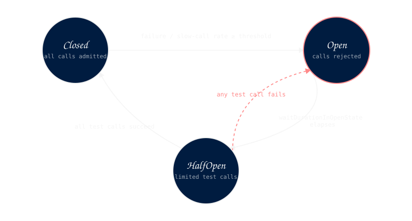

pattern
CircuitBreaker
Monitors call outcomes and opens the circuit when failure or slow-call rates exceed configured thresholds — preventing calls to a degraded downstream service from propagating load.
State machine

- Closed → Open — failure rate or slow-call rate exceeds its threshold, evaluated once the sliding window is full.
- Open → HalfOpen — after
waitDurationInOpenStateelapses. - HalfOpen → Closed — all permitted test calls succeed.
- HalfOpen → Open — any permitted test call fails.
Behavior
The CircuitBreaker maintains a sliding window of the last N call outcomes. After each call it recalculates the failure rate and the slow-call rate. If either rate exceeds its threshold, the circuit opens.
When open, all calls are rejected immediately without executing the operation. After a configured wait, the circuit moves to half-open and allows a small number of test calls through. If those succeed, the circuit closes. If any fail, it opens again.
A name is required. It appears in events and exceptions to identify which breaker fired. The current
state is inspectable at any time — the Open state carries the timestamp it was entered and
the remaining wait duration.
Rate thresholds
Both thresholds are expressed as fractions between 0.0 and 1.0. A value of 0.5 means 50%.
Thresholds are only evaluated once the sliding window has accumulated enough calls — before that, the
circuit stays closed regardless of outcomes.
- Failure rate — fraction of calls that threw a recorded exception.
- Slow-call rate — fraction of calls that exceeded
slowCallDurationThreshold.
Configuration
| property | required | description |
|---|---|---|
| name | yes | Identifier used in events and exceptions (instance-specific) |
| failureRateThreshold | no | Fraction of failures that triggers open. Default: 0.5 |
| slowCallRateThreshold | no | Fraction of slow calls that triggers open. Default: 1.0 |
| slowCallDurationThreshold | no | What counts as a slow call. Default: no limit |
| slidingWindowSize | no | Number of calls evaluated for rate calculation. Default: 10 |
| waitDurationInOpenState | no | Time in Open before transitioning to HalfOpen. Default: 60s |
| permittedCallsInHalfOpenState | no | Test calls allowed in HalfOpen. Default: 3 |
| recordOn | no | Exception types that count as failures. Default: any Exception |
| ignoreOn | no | Exception types that are not recorded |
| recordOnResult | no | Predicate — record a failure based on return value |
| withListener() | no | Subscribe to circuit events (e.g. Opened, Closed, CallRecorded) |
| withClock() | no | Use a custom Clock instead of system (mainly for testing) |
| state() | inspect | Get current state (Closed/Open/HalfOpen) with remaining wait |
Events & failure
- Opened — circuit transitioned to Open. Carries: name, reason.
- Closed — circuit transitioned to Closed. Carries: name, number of successful test calls.
- HalfOpened — circuit transitioned to HalfOpen. Carries: name.
- CallRecorded — a call outcome was recorded. Carries: name, success/failure, elapsed time, current failure rate.
- Rejected — a call was rejected without executing, because the circuit was Open or HalfOpen with no test-call permits left.
Throws CircuitBreakerOpenException when a call is rejected
because the circuit is open. Fields: name, open since, remaining wait.